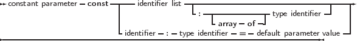

In addition to variable parameters and value parameters Free Pascal also supports Constant parameters. A constant parameter can be specified as follows:
_________________________________________________________________________________________________________
Constant parameters

___________________________________________________________________
Specifying a parameter as Constant is giving the compiler a hint that the contents of the parameter will not be changed by the called routine. This allows the compiler to perform optimizations which it could not do otherwise, and also to perform certain checks on the code inside the routine: namely, it can forbid assignments to the parameter. Furthermore a const parameter cannot be passed on to another function that requires a variable parameter: the compiler can check this as well. The main use for this is reducing the stack size, hence improving performance, and still retaining the semantics of passing by value...
Remark: Contrary to Delphi, no assumptions should be made about how const parameters are passed to the underlying routine. In particular, the assumption that parameters with large size are passed by reference is not correct. For this the constref parameter type should be used, which is available as of version 2.5.1 of the compiler.
An exception is the stdcall calling convention: for compatibility with COM standards, large const parameters are passed by reference.
Remark: Note that specifying const is a contract between the programmer and the compiler. It is the programmer who tells the compiler that the contents of the const parameter will not be changed when the routine is executed, it is not the compiler who tells the programmer that the parameter will not be changed.
This is particularly important and visible when using refcounted types. For such types, the (invisible) incrementing and decrementing of any reference count is omitted when const is used. Doing so often allows the compiler to omit invisible try/finally frames for these routines.
As a side effect, the following code will produce not the expected output:
Will write
This behaviour is by design.
Constant parameters can also be untyped. See section 14.4.2, page 692 for more information about untyped parameters.
As for value parameters, constant parameters can get default values.
Open arrays can be passed as constant parameters. See section 14.4.5, page 699 for more information on using open arrays.